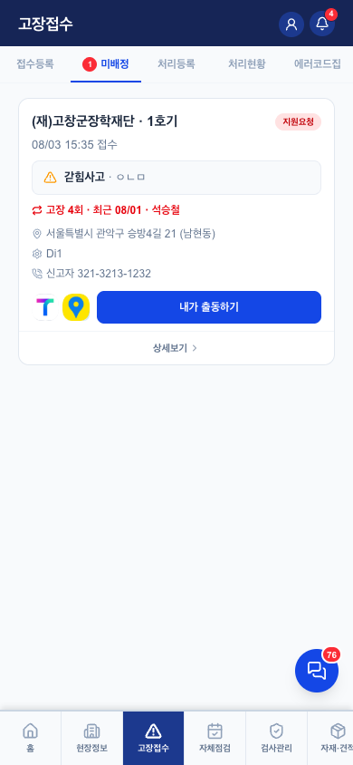
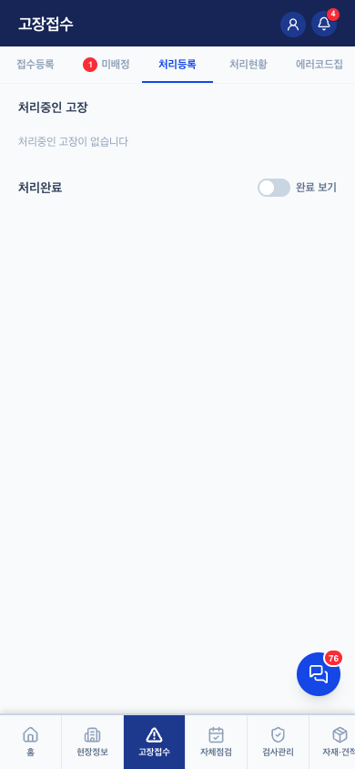
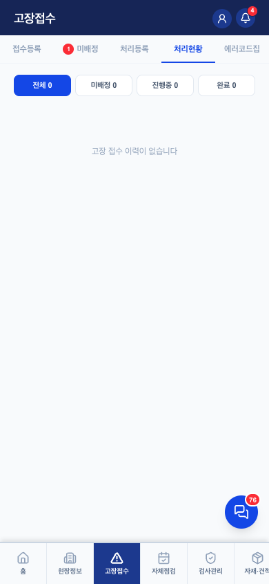
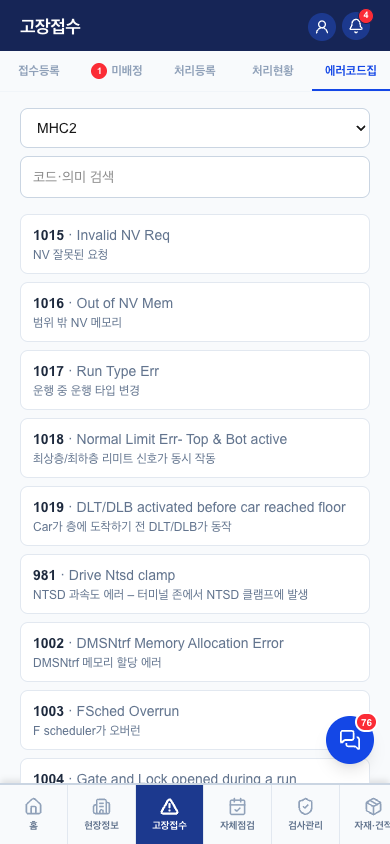

고장접수 v0.1
1. 연결 — 고장 한 건의 일생이 이 화면을 관통한다
 홈 (고장 카드)
홈 (고장 카드)→
 고장접수 (이 화면)
고장접수 (이 화면)→

미배정 → 선착순→

출동 → 처리등록- 흐름: 접수 → (미배정이면 선착순 잡기 / 배정이면 출동응답) → 도착 → 처리등록 → 완료. 상세는 유저플로우 "고장 한 건의 일생"
- 기사도 접수 가능 — 본인 배정+도착예정시간을 접수와 동시에 입력하면 출동응답 단계 생략
- 혼자 못 끝내는 건은 지원요청·운행정지로 미배정 환원 (판단자·도착시각 스냅샷 보존)
- 홈 탭의 고장 카드와 이 화면의 상세 시트는 공유 (교차 참조 허용 2곳 중 하나)
2. 하위 5탭


| 탭 | 역할·핵심 규칙 |
|---|---|
| 접수등록 | 4스텝 폼(현장→호기→증상→배정·연락처). 호기 여러 개 선택 시 호기당 1건씩 생성. 기사 본인 접수면 기본 배정=본인(진행중 건 있으면 미배정). 본인 배정 시 T맵 예상 소요시간 표시 |
| 미배정 | 선착순 — "내가 출동" 누르면 조건부 update로 DB가 한 명만 승자 처리. 미배정 15분 지속 시 관리자 알림(pg_cron) |
| 처리등록 | 결과: 처리완료 / 오신고 / 지원요청 / 운행정지. 뒤 2개는 미배정 환원(escalation 표시 유지). 사진 첨부 |
| 처리현황 | 진행·완료 목록 조회, 타임라인(접수→출동→도착→완료) |
| 에러코드집 | 기종별 에러코드 사전 (MHC2 489·SICON4000 282·SIGMA 147·TAC50 137·WB 82). 검색은 현장검색 방식·대소문자 무시. 콘솔에서 엑셀 대량입력 |
3. 필요 요소 (동작 전제)
failures— 상태(미처리/진행중/완료)·배정·타임스탬프. v2 FK(unit_id·assignee_id) 병행 기록error_codes— 에러코드집. 회사 데이터가 아니라 기종의 데이터- 기사 GPS(last_lat/lng) — T맵 소요시간·거리순 정렬. 없어도 동작
- 알림 체인 — 접수→관리자 / 미배정→기사 전원 / 중대(갇힘 등)→관리자 / 배정→해당 기사 / 재배정→회수 기사 / 15분 미배정·5분 무응답→pg_cron
4. QA 체크포인트 — 2026-08-04 전 항목 검증 완료 (QA-RULES 4장)
- ✅ 접수 저장 실패 시 폼 유지+알럿 — 신고 조용히 소실 안 됨
- ✅ 선착순 동시 출동 — DB 조건부 update로 한 명만. 통신오류와 선점을 구분 안내
- ✅ 도착 기록 — 재배정·거부로 상태 바뀐 건 덮어쓰기 차단
- ✅ 지원요청·운행정지 환원 시 판단자·도착시각 스냅샷 보존
- ✅ 알림 체인 전 경로 확인
- ✅ 본인 접수→출동응답 생략 (ETA 필수 입력 조건 포함)
- 🔧 허위 "문자 발송 완료" 안내 제거 (2026-08-04) — 신고자 문자는 미구현
5. 알려진 한계 (보류 중)
- 신고자 안내문자 미구현 — 붙이려면 SMS 업체 계약 + 발신번호 사전등록 (테넌트별 결정 사항)
- 에러코드집에 이미지 없음 — 텍스트 설명뿐 (스캔 자료 연결 못 함)
6. 화이트라벨 — 구일전용 → 타사 일반화
주황 점선 = 회사마다 갈아끼우는 자리. 회색 = 공통 부품.
접수 폼·선착순·처리 흐름 — 전부 공통 (핵심 로직은 회사 무관)
1T맵 소요시간
한국 전용 — 기능 플래그
2신고자 문자 (미구현)
구현 시 발신번호·문구가 테넌트별
3에러코드집
테넌트 공유 자산 — 회사별 분리 안 함 (확정 2026-08-04)
| # | 지금 어디에 박혀 있나 | 어떻게 갈아끼우나 |
|---|---|---|
| 1 | FailureTab.jsx 접수폼 + 출동응답 — /api/tmap-route 호출 | 기능 플래그 tenants.features.tmap_eta — 플랫폼 공용키라 한국 업체 기본 ON, 끄면 소요시간 표기만 사라짐 |
| 2 | (구)문자 문구에 "구일엘리베이터입니다" — 지금은 기능째 미구현·숨김 | 구현할 때부터 테넌트 발신번호+문구 템플릿. 발신번호 사전등록은 온보딩 체크리스트 미확정 항목 |
| 3 | error_codes 테이블 — 현재 단일 회사 전제 | tenant_id 안 붙임 — 전 테넌트 공유(기종 데이터라서). 한 회사가 보강하면 모두에게 이득. 이미지 컬럼 추가는 Eleva에서 |
고장 흐름 자체(선착순·에스컬레이션·알림 체인)는 회사 무관 공통 — 이 화면의 화이트라벨 부담은 부가 기능 3개뿐.
변경 이력
| 버전 | 날짜 | 변경 |
|---|---|---|
| v0.1 | 2026-08-04 | 최초 작성 — 하위 5탭 실물 캡처, QA-RULES 4장(같은 날 검증) 반영, 에러코드집 공유자산 결정 반영 |